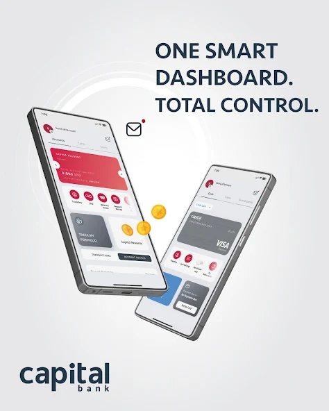
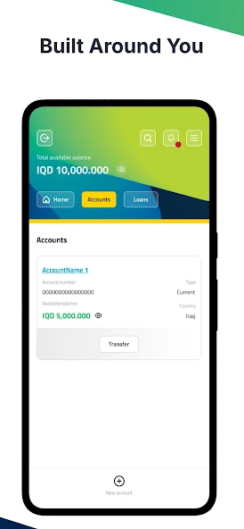
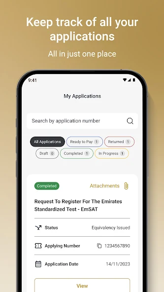
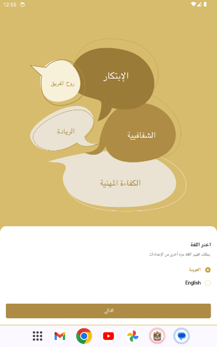

⌁
Mobile architecture
Cross-platform and native foundations designed for long-term change, consistent delivery, and secure integrations.
Mobile engineering leadership
Software Mobile Development Manager with 11+ years across banking, government, consumer apps, and games—from architecture and team delivery to production reliability.
What I lead
I work across the full mobile product system, making the technical and delivery decisions that keep releases secure, maintainable, and dependable.
Cross-platform and native foundations designed for long-term change, consistent delivery, and secure integrations.
Release planning, code quality, technical documentation, app shielding, and production follow-up.
Turning product goals into executable technical plans through reviews, mentoring, standards, and clear ownership.
Practical backend depth and game engineering experience for complete, performance-aware product decisions.
Career progression
Capital Bank · Jordan
Leading mobile planning and delivery, strengthening application security, reviewing code, and validating technical documentation for banking products.
Bank of Jordan · Jordan
Directed technical planning and work breakdown, led code reviews, improved mobile protection, and maintained delivery documentation.
Apps Wave · Jordan
Served as the technology focal point across mobile, backend, and web; owned planning, technical documentation, and multidisciplinary code review.
Imagine Technologies · Farah Lab · Oakleaves
Built the hands-on foundation across product requirements, mobile standards, complex technical problem-solving, testing, and customer communication.
Selected work
Representative banking and government applications from a broader portfolio of mobile, education, enterprise, and game products.

Digital banking · Mobile leadership
Contributing to secure mobile delivery through release planning, code review, technical documentation, application shielding, and engineering coordination.
View on App Store ↗
Digital banking · Technical leadership
Technical leadership across planning, secure delivery, review standards, and documentation for regional banking applications.
View product ↗
Government services · Cross-platform
A public-service mobile experience supporting access to Ministry of Education services across iOS and Android.
View product ↗
Government services · Mobile
Mobile access to UAE Ministry of Finance services, delivered for a high-visibility government environment.
View product ↗GovernmentADHA UAE, ACTVET UAE, PIF KSA, TEC UAE, KIA Jordan
Consumer & enterpriseBlink, WAW Al-Balad, Jannah.jo, Amman Academy, Maintenance Tracker
Games & inclusionHook and Run, Bravo Bravo, Ehsan Ensan
Training45-hour cross-platform courses for VibrantSoft and KIA employees
Leadership approach
Translate product goals into clear technical plans, boundaries, and accountable delivery.
Use review standards, documentation, testing, and release discipline before production pressure arrives.
Choose architecture that keeps feature work predictable without over-engineering the product.
Start a conversation
I’m open to conversations about mobile engineering leadership, architecture, and high-trust product delivery.